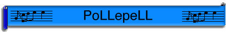
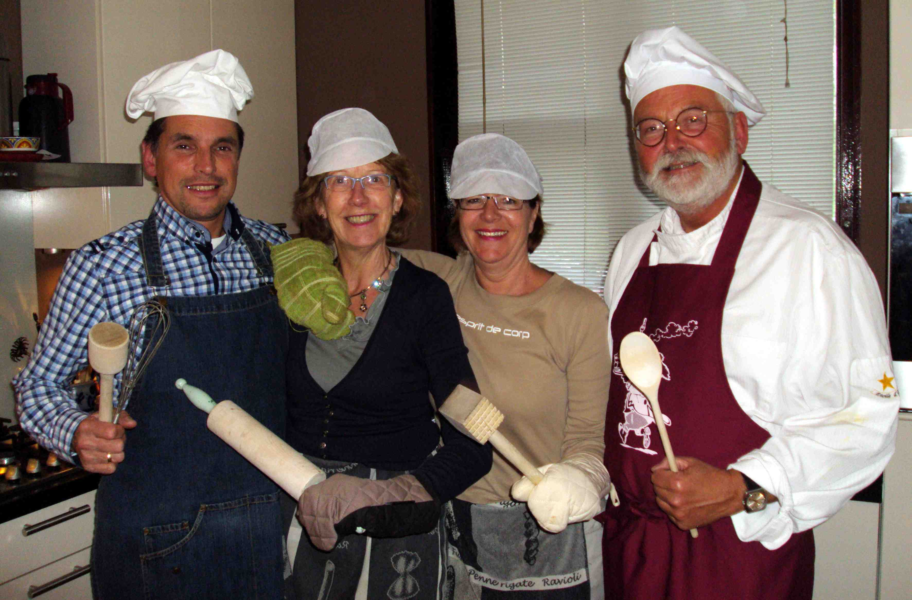
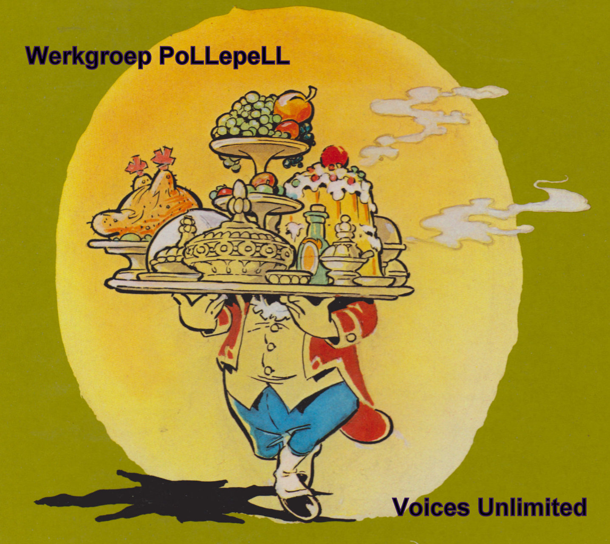

Werkweekend Werkgroep PoLLepeLL geslaagd!
|
De werkgroep PoLLepeLL heeft het lange weekend van Koninginnedag dit jaar
goed gebruikt. Er is van alles uitgeprobeerd om het komend jubileumweekend in oktober a.s.
ook culinair tot een succes te maken. Het was niet eenvoudig om een weekend te vinden, maar dankzij de
Koninginnedag is dat toch gelukt. Ook het vinden van een locatie die geschikt leek om te oefenen was geen
sinecure. Temeer daar de uiteindelijke bestemming niet achterhaald kon worden.
Dan moeten er maar een aantal zaken "op de gok", waartoe ook het aantal deelnemers en hun dieetwensen behoren.
Toch meent de werkgroep geslaagd te zijn met deze eerste proeven
van "kookkunsten uitproberen".
In elk geval bleken de leden "aan elkaar gewaagd" en zien de resultaten er naar
uit dat er (met nog wel wat extra investering van verschillende zijden) genoeg en
smaakvol te verteren zal zijn.
Jerry Indekeuken
|

De Werkgroep PoLLepeLL is geboren en wordt gevormd door:
Anna Hogervorst
Nico van den Bergh
Jan van der Poll en
Anke Smeets
Dit namens de chef: Jerry Indekeuken!
|

|